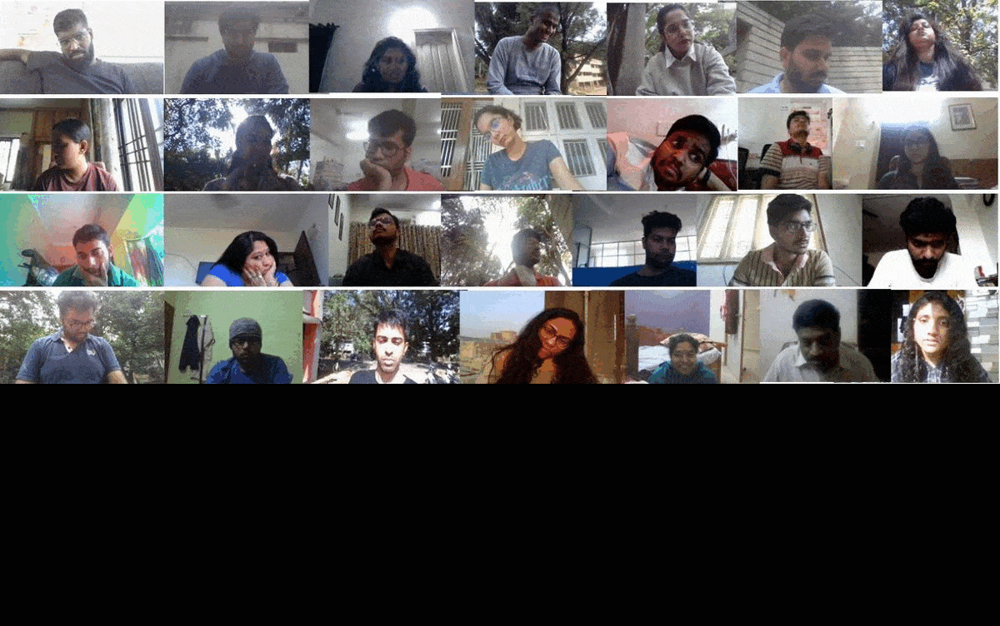
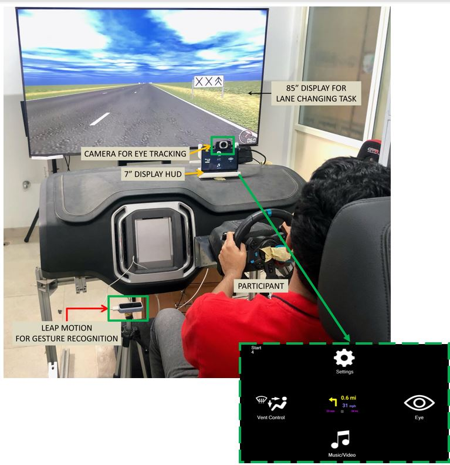
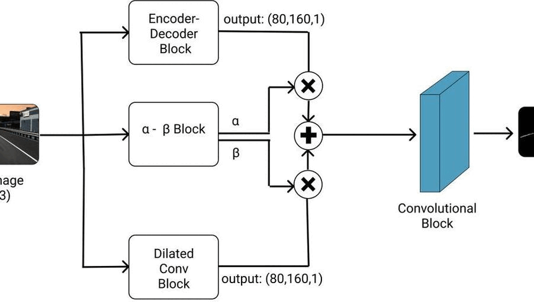
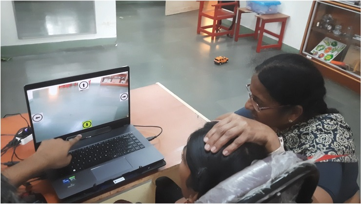
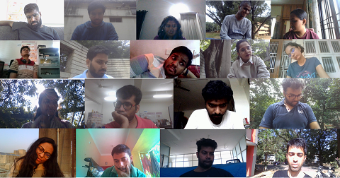
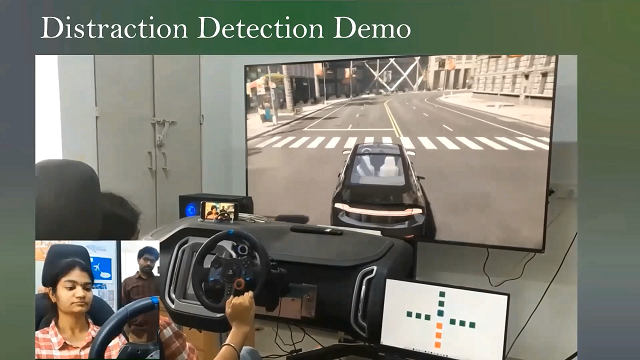
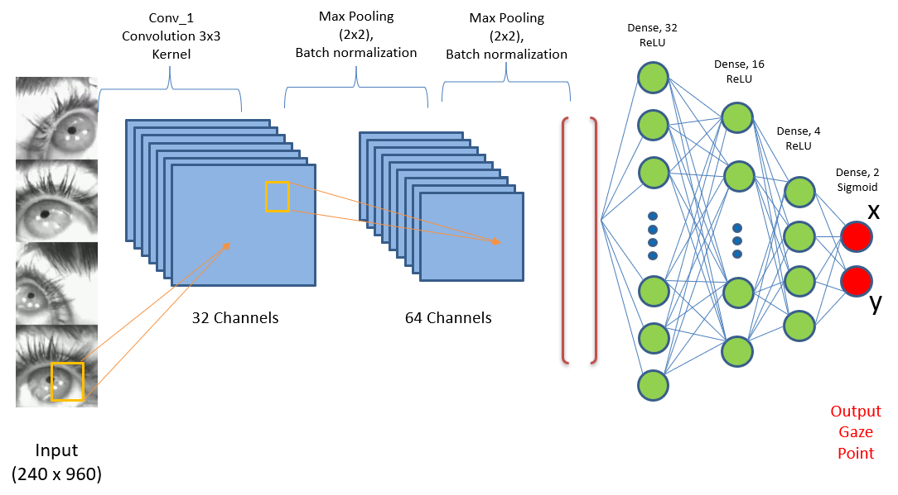
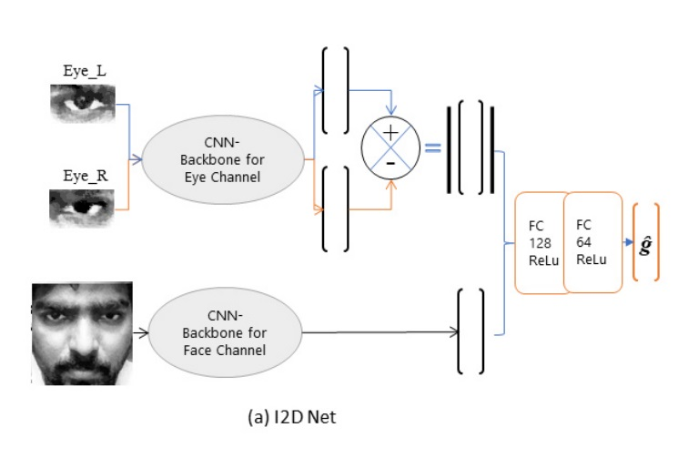
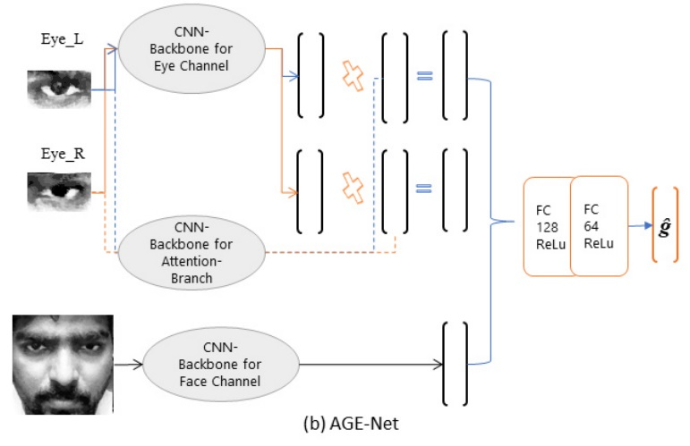

|
I am a PhD Student in I3D Lab under the supervision of Dr. Pradipta Biswas at Centre for Product Design and Manufacturing, Indian Institute of Science, Bangalore where I work on Human Computer Interaction, Computer Vision and Machine Learning.
My Doctoral thesis is focused on developing Eye Gaze Estimation Systems using webcameras to enable gaze-controlled applications on laptops and mobile devices and Infra-Red cameras for Augmented and Virtual Reality applications.I worked briefly on Gesture Recognition, Remote manipulation of Robotic Arm and Understanding interaction in Virtual Reality.
I was fortunate enough to work as a Visiting Researcher under Prof. Sriram Subramanian at former Interact Lab at University of Sussex (Currently MSD Lab at UCL ). I also worked as a Research Intern in High Voltage Laboratory under Prof. Andrea Cavallini at University of Bologna for my Bachelor's Thesis.
I play Badminton, I play Guitar, I read books (preferably Novels) and occasionally I write poetry in Telugu. I am Ambidextrous.
Email / CV /
Google Scholar
|
|
News
- October 2022: Submitted my Thesis. Actively looking for postdocs at the interscetion of HCI and AI including topics like Computer Vision for HCI, Human-AI Interaction, Developing novel and accessible interfaces etc.,
- August 2022: Our Work on Lane Detection in Unstructured Road Environments got accepted in IEEE Transactions on Artificial Intelligence.
- July 2022: Our Work on Interactive Head-Up Displays using Appearance-based Gaze Tracking got accepted in AutoUI'22 in Work in Progress (WiP) Track.
- July 2022: Completed my PhD Colloquium on July 8th, 2022.
- April 2022: Our Work on "Comparing two safe distance maintenance algorithms for a gaze controlled HRI involving users with SSMI" got accepted in Transactions on Accessible Computing
- Jan 2022: Two Poster Papers accepted at ACM IUI'22.
- Dec 2021: One Poster Paper, accepted at ACM VRST'21, titled Validating Social Distancing through Deep Learning and VR-Based Digital Twins.
- Nov 2021: Our paper, "Deep Learnng based Eye Gaze Estimation for Military Aviation" accepted for IEEE Aerospace Conference.
- Aug 2021: A journal paper, "I2DNet - Design and real-time evaluation of an appearance-based gaze estimation system" published in Journal of Eye Movement Research. check out here.
- Jun 2021: Our paper titled "Appearance-based Gaze Estimation using Attention and Difference Mechanism" got accepted at Gaze2021 workshop at CVPR'21
- Dec 2020: Our work "Cognitive load estimation using ocular parameters in automotive" has been accepted at the Transportation Engineering
- Aug 2020: Our work "Webcam controlled robotic arm for persons with SSMI" appeared in Technology and Disability Journal and you can read it here
|
|  |
Towards Precision in Appearance-based Gaze Estimation in the Wild
Murthy L.R.D., Abhishek Mukhopadhyay, Ketan Anand, Shambhavi Aggarwal, Pradipta Biswas
VIEW
This work extends the earlier proposed PARKS-Gaze dataset with larger nuber of samples and participants. It investigates the precision, along with accuracy of existing gaze estimation models. Takeaway result from the paper is training dataset influences the precision of gaze estimation model and the proposed dataset reduces precision error, even under cross-dataset evaluation settings.
|
|  |
Efficient Interaction with Automotive Heads-Up Displays using Appearance-based Gaze Tracking
Murthy L.R.D., Gyanig Kumar, Modiksha Madan, Sachin Deshmukh, Pradipta Biswas
ACM Automotive User Interfaces (AutoUI), 2022
VIEW
This paper proposes an interactive Heads-Up Display for automotive using webcam-based eye tracking system. We compared the proposed approach with gesture-based interaction and presented both quantitative and qualitative results.
|
|  |
A Hybrid Lane Detection Model for Wild Road Conditions
Abhishek Mukhopadhyay, Murthy L.R.D., Imon Mukherjee, Pradipta Biswas
IEEE Transactions on Artificial Intelligence
VIEW
This work presents an Indian Lane Dataset (ILD), augmenting existing Indian Driving Dataset (IDD) with lane marking labels and proposes a novel hybrid CNN architecture with a new loss function for accurate lane detection results, even in unstructured road scenarios.
|
|  |
Enabling Learning Through Play: Inclusive Gaze-Controlled Human-Robot Interface for Joystick-Based Toys
Vinay Krishna Sharma, Murthy L.R.D., Pradipta Biswas
International Conference on Social Robotics, 2022
VIEW
This paper investigates the utility of a gamified approach to introduce gaze tracking technology to people with sever speech and motor impairment. Results indicate that exposure to a fun activity like controlling a joystick-based control using eye tracking increases the user engagement time for learning activities with eye tracking. This work was done using earlier proposed webcam-based gaze estimation models and the PARKS-Gaze dataset
|
|  |
PARKS-Gaze - An Appearance-based Gaze Estimation Dataset in Wilder Conditions
Murthy L.R.D., Abhishek Mukhopadhyay, Ketan Anand, Shambhavi Aggarwal, Pradipta Biswas
ACM Intelligent User Interfaces, 2022
VIEW
This Appearance-based Gaze Estimaion Dataset focuses on two things which earlier datasets did not address, Precision and Wide Head Pose Angles. This is the largest in-the-wild appearance-based gaze estimation dataset in terms of total number of frames collected.
|
|  |
Distraction Detection in Automotive Environment using Appearance-based Gaze Estimation
Murthy L.R.D., Abhishek Mukhopadhyay, Pradipta Biswas
ACM Intelligent User Interfaces, 2022
VIEW
This paper proposes a light-weight appearance-based gaze estimaion model which can provide real-time gaze angle predictions to determine driver visual distraction in an automotive setting.
|
|  |
Deep Learnng based Eye Gaze Estimation for Military Aviation
Murthy L.R.D., Pradipta Biswas
IEEE Aerospace, 2022
VIEW
We performed the failure mode analysis of Commercially-Off-The-Shelf IR-based wearable eye tracker and proposed an alternative deeplearning-based solution. Our solution is robust to bright external illumination conditions where the current model-based system fail.
|
|  |
I2DNet - Design and real-time evaluation of an appearance-based gaze estimation system
Murthy L.R.D., Siddhi Brambhatt, Somnath Arjun, Pradipta Biswas
Journal of Eye Movement Research
VIEW
We proposed an appearance-based gaze estimation system based on the feature-difference vector approach called I2D-Net. We also evaluated it for real-time gaze-controlled interaction task and found it to be useful upto for 4x4 pointing and selection task without any personalized calibration.
|
|  |
Appearance-based Gaze Estimation using Attention and Difference Mechanism
Murthy L.R.D., Pradipta Biswas
IEEE/CVF CVPR Workshops (Gaze2021), 2021
PDF
I proposed two appearance-based gaze estimation models I2D-Net, based on Difference mechanism and AGE-Net based on novel weighted-features mechanism (Inspired from the famous Attention mechanism). AGE-Net achieved SOTA gaze estimaion accuracy on MPIIGaze, RT-Gene.
|
Academic Service as Reviewer
- Journals: IEEE Sensors, Journal of Multimedia Systems (MMSJ), Artificial Intelligence for Engineering Design, Analysis and Manufacturing (AIEDAM), Internation Journal on Social Robotics
- Conferences: ACM CHI’23, ACM IUI’23, EuroGraphics, ACM UMAP, ACM IUI
|
|
{kind=link}